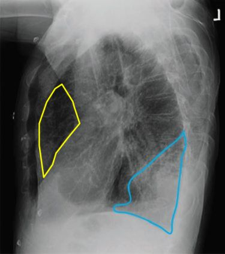

| PBL Chest X-ray 2 |
|
 |
 |
| The lungs are hyperinflated. Note the flattened diaphragm.
There is a large space between the sternum and the heart on the lateral view (outlined in yellow), and the heart looks narrow because it is rotated with a nearly vertical axis.
That is from underlying COPD. The lower lobe infiltrate is outlined in blue.
|
|